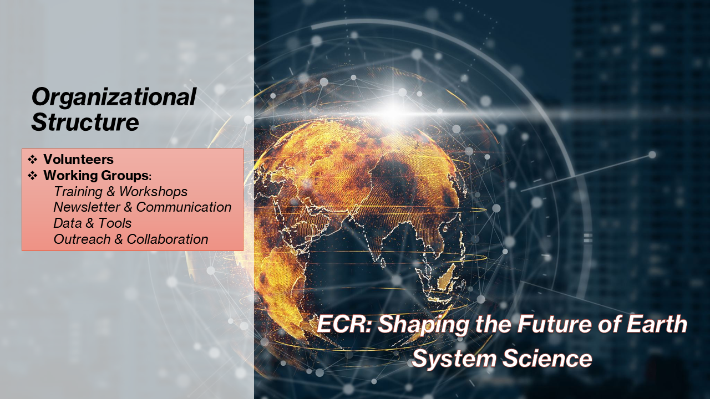
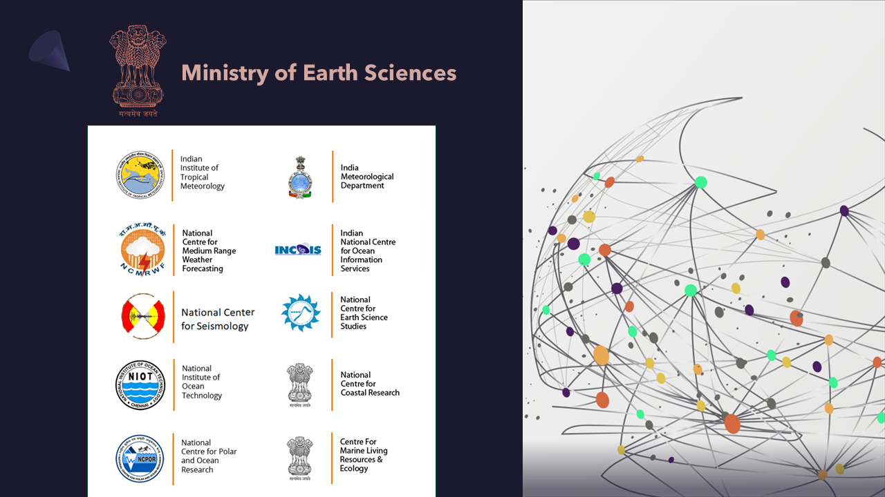

ज्ञानाय संगच्छध्वम् | Learn, Contribute, Grow.
The Early Career Researchers (ECR) Hub is an initiative to support and empower young scientists in Earth system science. It provides a platform for collaboration, learning, and innovation through shared resources, events, and mentorship.
An Early Career Researcher (ECR) is an individual in the early stages of their research career. This typically includes:

Upcoming Seminar:
“A ‘round-the-world’ journey through Marine Science: my path as an Early Career Researcher”
Presenter: Rita M. Franco-Santos
Affiliation: The University of Western Australia
Interested in joining the ECR Hub? We’d love to hear from you — tell us what you bring to the table!
To become a part of the MoES-ECR Hub, simply register using this form. Once registered, you’ll receive a confirmation email with details on how to sign up for Hub membership and get involved in ongoing activities.
Whether you're passionate about research, outreach, training, or collaboration, there's a place for you in our growing community of early career Earth system scientists.
Email: ecrhub@tropmet.res.in
Indian Institute of Tropical Meteorology (IITM), Pune